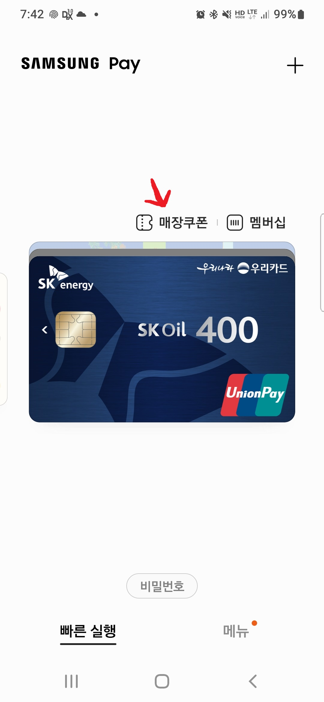
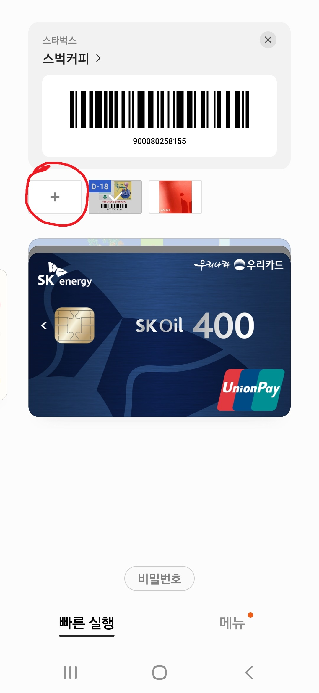
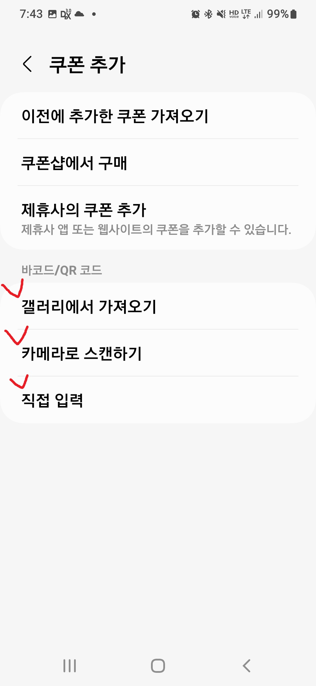
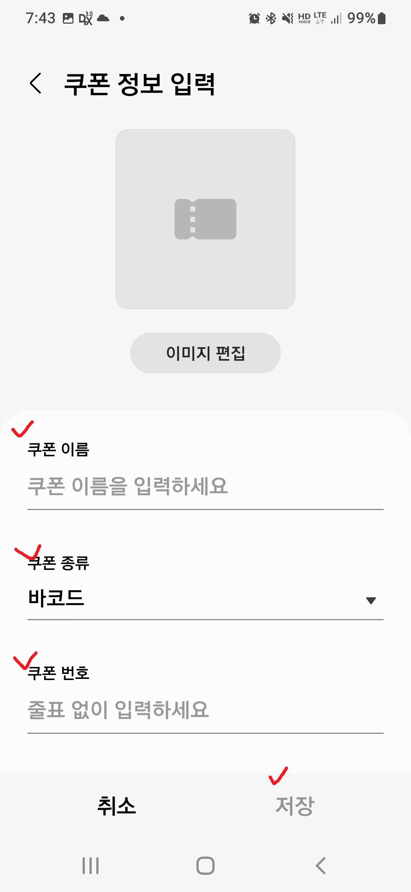
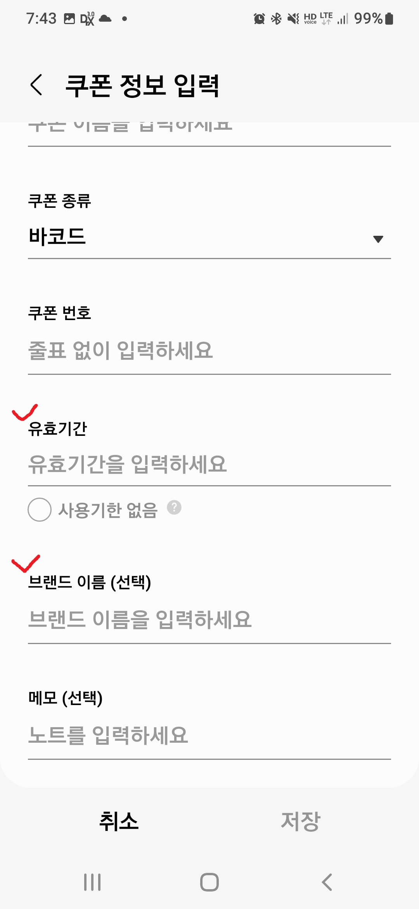

쿠폰 삼성페이 등록 및 사용 Tip!!
☞ 이벤트 참가로 받으신 다양한 쿠폰 삼성페이에서 등록 사용하시면 편리합니다.
📢 쿠폰 유효기간 경과로 사용하지 못하신적 많으시죠? 삼성페이에서는 사용기한을 쉽게 확인하실 수 있습니다.
아래, 쿠폰 삼성페이 등록 방법을 참조 하세요~~
# 삼성페이를 실행 후 카드상단의 "매장쿠폰" 선택

# 다음으로, 카드상단의 "매장쿠폰 추가 ("+")

# 쿠폰등록 : 받으신 쿠폰을 "바코드스캔" 또는 "쿠폰번호 입력" 등으로 등록하세요

# 쿠폰편집 : 쿠폰 이름, 유효기간 등 정보 입력으로 등록 완료됨.


☞ 쿠폰 등록이 완료되면 카드 상단에 쿠폰과 "바코드"가 표기됩니다.
※ 사용하실 매장에서 쿠폰(바코드)를 제시 후 사용하실 수 있습니다.
☞ 쿠폰유효기간은 쿠폰 좌측상단에 D-DAY로 표기 됩니다
신협홈으로 가기